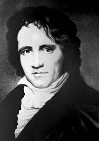

Бессель, Фридрих Вильгельм

Фридрих Вильгельм Бе́ссель (
нем.
Friedrich Wilhelm Bessel;
22 июля
1784,
Минден
— 17 марта
1846,
Кёнигсберг)
— немецкий математик
астроном
и , ученик
Карла Фридриха Гаусса.
Иностранный член Лондонского королевского общества (1825)[5], Парижской академии наук (1840; корреспондент с 1816)[6], почётный член Петербургской академии наук (1814)[7].
(нем. Friedrich Wilhelm Bessel; 22 июля 1784, Минден — 17 марта 1846, Кёнигсберг) — немецкий математик и астроном, ученик Карла Фридриха Гаусса.
-
Биография
-
Награды
-
Память
-
Фотогалерея
-
См. также
-
Примечания
-
Литература
-
Ссылки
Биография
Фридрих Вильгельм Бессель, поступив учеником в один из торговых домов в Бремене, приобрел там познания в математике и заинтересовался астрономией. Одна астрономическая работа привлекла внимание Ольберса, по рекомендации которого он поступил в 1806 году к Шрётеру, в Лилиентале, в обсерваторию, где Бессель в течение четырёх лет занимал место наблюдателя[8].
Не обучавшись в гимназии и университете, получил докторскую степень Гёттингенского университета. Профессор Альбертины (Кёнигсбергского университета). Внёс большой вклад в изучение масштабов Вселенной, в том числе, в изучение параллакса. Проводил расчёты орбиты кометы Галлея. Основатель и директор Кёнигсбергской обсерватории. Определил положение 75000 звезд и создал обширные звездные каталоги. В 1838 году выполнил первые научно достоверные измерения годичного параллакса для звезды (61 Лебедя). Приоритет открытия годичного параллакса звёзд признается за Бесселем. В 1841 году по данным многих измерений вычислил размеры земного эллипсоида, которые широко применялись в геодезии и картографии вплоть до середины XX века. В 1844 году предсказал наличие у Сириуса и Проциона малоразличимых звёзд-спутников[9].
Фридрих Вильгельм Бессель скончался 17 марта 1846 года в городе Кёнигсберге (ныне Калининград), и был похоронен на кладбище в Кёнигсберге. В настоящий момент точное место захоронения Бесселя неизвестно. На участке, где оно располагалось, построен многоэтажный жилой дом[10].
Ссылки
Астрономы мира. Фридрих Вильгельм Бессель. К 220-летию со дня рождения
Бессель Фридрих Вильгельм, Астрономы (Биографический справочник)
БЕССЕЛЬ, ФРИДРИХ ВИЛЬГЕЛЬМ
Наука и техника: Астрономия
Здесь была астрономическая обсерватория Фридриха Вильгельма Бесселя. There was an astronomical observatory of Friedrich Wilhelm Bessel here